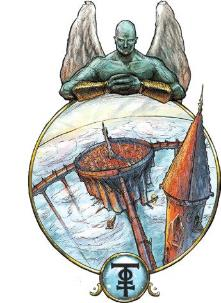
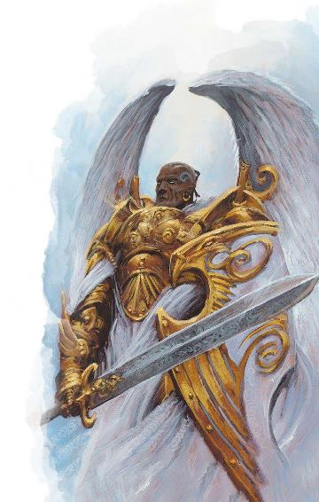
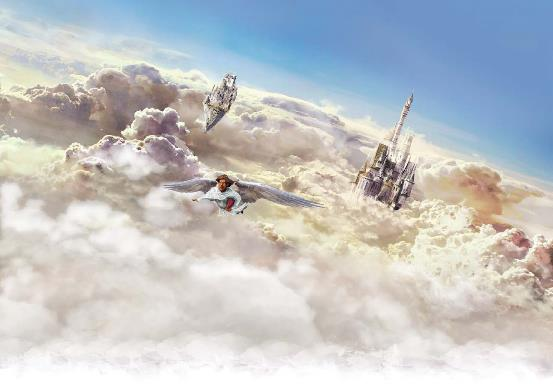

Exploring
Eberron p189~193 SYRIANIA:THE AZURE SKY 
原文基于July 2020. PDF Version: 1.04
翻译by Pany_Q
校对by 2周后的Pany_Q
想象一片完美湛蓝的天空，一直延伸到地平线。这里看不到太阳，但是天空清澈而明亮，漂浮的水晶塔闪闪发光，仿佛被阳光照耀。温暖的微风拂过你，远处传来微弱的钟声。你感到无比的平静，在这一刻，所有的怒火会被融化。
这里是西拉尼亚，苍蓝天庭。虽然当提起这里，人们最常想到的是浮空塔和水晶尖塔——同样的魔法也支撑着萨恩的诸高塔，但同时，西拉尼亚也是和平的位面，体现了所有在和平时期繁荣之物：商业、教育、思考。这里没有庞大的军队，没有危险的怪物。西拉尼亚的魔法能让所有生物互相沟通，还能消除敌意。因此，西拉尼亚成为位面旅行者们共同的交汇点，西拉尼亚的无限集市是能与诸如邪魔、史拉蟾及其他异界存在打交道的地方中最安全的。不过，虽然苍蓝天庭鲜有流血事件发生，你仍可能树立致命的敌人；在天使之城中，明智的凡人都不会轻举妄动。
西拉尼亚鼓励沟通和交涉，并赋予所有生物飞行的能力。西拉尼亚的广阔天空是片无边无际的空间，如果没有飞行能力，你可能会永远坠落下去；不过幸运的是，所有生物在这里都能像走路一样自然地在空中移动。
无荷轻盈(Unburdened)：生物获得等同于其步行速度的飞行速度，除非其飞行速度已经大于或等于其步行速度；后者情况下，其飞行速度增加10尺。
温柔思维(Gentle Thought)：生物在魅力（游说）检定中具有优势，在魅力（威吓）检定中具有劣势。
标准时间(Standard Time)：时间流逝速度与物质位面的相同，并且在其各个位层中也是一致的。
互相理解(Universal Understanding)：生物可以理解它所听到的任何口语的字面意思，也可以理解其所看到的任何书面语言。这并不会破译秘密讯息或揭示不属于书面语言的符号的意义。
绝对和平(Absolute Peace.)：生物若要进行攻击或施放伤害性法术，必须成功通过一个DC18的感知豁免检定。若豁免失败，其不会做出攻击或施法，但会失去该动作。
西拉尼亚意外地是个空荡荡的位面。虽然无限集市总是熙熙攘攘，但这些人流大多是由其他位面的生物构成的。西拉尼亚的其他尖塔的居民相对较少——并没有少到让人觉得荒凉或贫瘠的程度，只是足够让人总觉得缓慢而宁静。这里不需要人们去做一些琐碎的工作，这个位面也不用显能现象去填充人口；损坏的建筑会逐渐自我修复，垃圾和残骸也会慢慢消融。
西拉尼亚的本地居民是长着翅膀的人形不灭者，统称为天使，不过他们在某些重要方面与其他位面的天使有所不同。虽然他们被看作天界生物，但大多数西拉尼亚天使都是中立阵营的。他们并非正义的勇士，也不是希望的使者；相反，他们是观察者和学者，由各自的研究领域所定义。较低级的不灭者直接被称为天使，而高阶的天使则有头衔——力天使(virtues)、主天使(dominions)和座天使(thrones)。这些高阶天使根据自己的领域，被束缚在对某一概念的思考中，并将自己的存在都用于思考和理解这一概念。有些人认为，正是通过这种思考，概念才得以继续存在（尽管其他地方的大多数居民——无论是不灭者还是凡俗生物——都认为这是极不可能的）。西拉尼亚天使的外表深受其领域的影响，所以风暴的主天使可能周身缠绕着闪电，并且拥有风暴云形成的翅膀，而树木的主天使可能会以树皮为皮肤，以苔藓为头发。
与较低级的天使或外来的来访者不同，西拉尼亚的力天使、主天使和座天使对西拉尼亚的绝对和平特性的效应具有免疫，并且能够为保卫西拉尼亚而采取攻击性的行动，或者在追求自身的领域时也是如此——所以一位战争的力天使可以战斗。不过，当面对威胁时，他们总是优先采用非暴力或非致命的解决方式。
天使是西拉尼亚最低级的不灭者。他们没有名字或领域，通常可以互相替代；他们是书记员和向导，处理不重要的工作。他们不参与战斗，其数据也基本不重要。
力天使属于高阶天使，拥有名字和广泛的领域——比如：哈札利·自然之力天使(Hazari, Virtue of Nature)。他们充当主天使的助手和使者。力天使大部分时间都在思考自己的领域，不过他们也会为各自的主天使收集信息——或是通过调取现存于西拉尼亚的记录，或是通过与来访的生物交流，或者奔赴西拉尼亚之外并潜伏观察。每位主天使总是知道发生在其力天使身上的一切，并立即获知他们收集的所有信息。力天使通常使用梵天神侍(Deva)的数据，他们在收集情报时会改变自己的形态来隐藏自己的存在。《西拉尼亚诸领域》(SYRANIAN DOMAINS)边栏提供了一些领域的例子。一位力天使可能会施展一些与自身领域相关的额外法术，尽管他们不会具有完整的法术列表。力天使只能通过通神术(commune)来回答与自身领域相关的问题，另外可以每天施放一次异界传送(plane shift)，但只有当直接受命于一位主天使时才能使用。
主天使专注于单一领域的一个非常具体的方面，比如狼或者剑。他们拥有名字和特定的领域，此外他们还有气派的头衔——比如：特扎利亚·风暴天使·第七尖塔之主天使(Tezaria, Angel of the Storm, Dominion of the Seventh Spire)。主天使通常让力天使担任他们的眼和手，自己则沉浸于思考之中；不过偶尔——比如当自己的尖塔受到威胁时，他们也会采取直接行动。作为中立的观察者，主天使对凡人没有任何同情心，但他们通常愿意与一个对自己的领域持有着有趣观点的凡人进行探讨。
需要强调的是，要认识到撒法拉斯的战斗天使与西拉尼亚的战争领域主天使之间的区别。撒法拉斯天使战是打仗的，这与和平的西拉尼亚格格不入。另一方面，西拉尼亚的主天使——或许叫做剑*之天使——懂得战争，尤其是懂得关于“剑”这一事物的一切知识。他们熟知任何凡俗或非凡俗文化中的任何剑术技巧。他们能认出任何剑，知道许多早已被遗忘的名剑如今在何处，甚至自己还拥有几把。他们很可能是世间最致命的剑士之一，但他们其实并不渴望战斗，因为那不是重点：他们是剑之天使，剑是其思考的主题。
*译注：上段的“剑”原文为sword，原意在中文语境下还包括短柄的刀，但是写刀剑会显得像是两个主题而不是一个了，所以只保留剑。请自行把剑替换为刀剑。
主天使通常使用异界神侍(Planetar)的数据，不过将后者的法术和技能按《西拉尼亚诸领域》边栏做相应替换，同时保留随意施展侦测善恶(detect evil and good)和隐形术(invisibility)的能力，当他们在物质位面观察时会使用隐形术来避免被发现。主天使也可能拥有某些额外能力，反映了他们对自身领域的全知全能。例如，剑*之主天使可能免疫由剑造成的任何伤害；也许他们知道如何完美防御这样的攻击，甚至可能剑本身拒绝伤害他们。
*译注：同上，上段的“剑”原文为sword，原意在中文语境下还包括短柄的刀，但是为了简略起见只保留剑。请自行把剑替换为刀剑。
西拉尼亚诸领域SYRANIAN DOMAINS每一位力天使、主天使和座天使都致力于思考和精通某一个领域。这里列出了一些领域的例子，以及任何专属于该领域的主天使或座天使可能会有技能和法术；力天使也可能会施放其相关领域中的个别法术。 奥秘(Arcana)。随意施展：侦测魔法，鉴定术，魔法飞弹；3次/天：解除魔法，防护法阵，涅斯图魔法灵光，移除诅咒；1次/天：反魔法力场，异界誓缚，传送法阵。技能：奥秘。 |
座天使是西拉尼亚最高阶的天使。每个领域都只有一个座天使，他们对自己的整个领域有着深刻的理解。与较低级的天使不同，座天使只以他们的领域为名，没有其他名称——比如，战争之座天使。座天使与所有研究课题属于其领域之内的主天使都相联结，他们能知道这些主天使所经历的一切。他们总是深陷在沉思中，只有在西拉尼亚本身遭到威胁或某个主天使屈服于腐化时，才会亲自采取行动。座天使拥有相当于或高于炽天神侍(Solar)的力量，不过当使用诸如通神术(commune)这样的法术时，祂只能回答与其领域相关的问题。座天使也可以使用《西拉尼亚诸领域》边栏里的技能和法术。通过一个附赠动作，座天使能够从祂能看到的任何数量的生物身上剥夺西拉尼亚所赋予的无荷轻盈特性的益处——所以那些不会飞的惹祸精们会发现自己永远坠落在开阔天空之中。
座天使是凡人能够遇到的最强大的存在，不过有很多学者认为，他们自己也隶属于某个更强大的力量，后者知道他们所经历的一切，并且塑造了这个位面本身。
西拉尼亚各位层互相独立的其他位面不同，它由漂浮在被称为广阔天空(the Open Sky)的无尽空间中的诸多水晶尖塔(spires)所构成。一座尖塔内部的空间可能远比从外侧看起来的大得多——这座尖塔可能通往高塔林立的西拉尼亚大学(the University)，或是一望无际的无限集市(the Immeasurable Market)。不过，所有的区域都通过尖塔和广阔天空作为媒介连接在一起的。
并不是所有尖塔内部都那么辽阔。大部分尖塔是某位主天使的居所，伴有几名侍奉其左右的力天使，必要时还会有几名一般天使。这些尖塔一般近似于图书馆或博物馆，此外还有供主天使实践或研究其课题的额外设施。自然之主天使的尖塔中有花园，而战争之主天使的高塔中有铠甲展示厅和决斗室。但这些仍然是研究和思考的地方；战争之主天使的居所并不是一座坚不可摧的堡垒，自然之主天使的尖塔中有精心打理的花园，但并不是你能在伊瑞安或拉玛尼亚找到的荒野。
广阔天空是一片浩瀚无垠的蔚蓝苍穹，苍蓝天庭也由此得名。这片纯净、明亮的天空既没有太阳，也没有时间流逝的痕迹；可以看到月亮瑟伦多(Therendor)，但它既不会移动也没有月相变化。虽然广阔天空看似无边无际，但实际上它的边界连着自己，其有效范围是一个以300英里为边长的立方体。所以，虽然从一个最远端旅行到另一个最远端会花费可观的时间，但依然是可以实现的。广阔天空中没有任何本土的威胁，并且所有来到西拉尼亚的来访者都能飞行；重点是，你得知道要去哪里，因为这里有数百座尖塔。
对知识和教育的追求是在和平时期蓬勃发展的事物。尽管大多数主天使都致力于独自一人的沉思，但知识之主天使却维持着西拉尼亚大学(University of Syrania)，在这里，被选中的学生们会同知识之力天使以及偶尔做客的主天使一道，研究学习广泛到难以想象的各类知识。不过注意，要成为这里的学生首先要得到录取...但是实际上没有一个申请入学的流程。目前，大学只有20名学生，他们是由四处旅行的力天使们从各个位面选拔出来的。
对于来到西拉尼亚的位面旅行者来说，大学是一个知识的宝库；如果那些力天使学者们不能解答你的问题，他们多半知道如何找到一位知道答案的主天使。对于玩家角色来说，大学还能作为一个不同寻常的背景；也许一位神圣之魂(Divine Soul)术士正是在西拉尼亚大学解锁了自身的力量，或者一位契术师的天界宗主(Celestial patron)正是他们论文的指导者。它还可以成为一个很奇特的大学类型团体赞助人(group patron)...
虽然大多数位面都互相隔绝，要从一个位面到另一个很困难，但是，商业与和平的交流正是西拉尼亚决定性的方面。大多数位面都有着通往无限集市的后门。这座位于阔天空中的水晶尖塔只是一个传送门，它连接着一片看不到尽头的露天市场。在集市的一处，一个史拉蟾(slaadi)正与一台魔冢(modron)就鹫马蛋的价格讨价还价；而在另一处，一名狡猾的土巨灵正在向一位撒法拉斯的巴洛炎魔展示精选的费尼亚锻造的利刃。据说，你能想象到的任何东西——还有许多你想象不到的东西，都能在无限集市找到。
无限集市的顾客和商人来自各个位面，包括物质位面；在艾伯伦也隐藏着几个通往集市的后门，有幸找到它们的人都能够靠交易稀有货物大赚一笔。集市中还有相当数量的本地的不灭者。天使们担任服务员和搬运工，商业的力天使们经营着小摊和店铺。商业之主天使们则运营着最大和最可靠的生意，而商业之座天使则监管整个集市，并驱逐任何捣乱者。
集市中有数不尽的商户。大多数都有临时的摊位或帐篷，但也有一些永久性的建筑散落在各处；最终休憩酒馆(the Last Resort)是诸位面中最受喜爱的消磨时间的好去处。《无限集市的商人》表提供了一些冒险者可能遇到的商人和店铺的例子。
|
D8 |
业务Business |
|
1 |
最终休憩酒馆(The Last Resort)是一个能看到天使与魔鬼对酌、精类分享着故事、史拉蟾互相碰杯的酒馆。这里的酒保“慰藉”(Solace)是招待之主天使；他拥有一双耐心倾听顾客烦恼的耳朵，而且总能知道最适合当前情况的饮料。 |
|
2 |
夜鬼婆贾巴拉(Jabra)是一位技艺高超的炼金术师。她将偷来的美梦和噩梦装进瓶子里，并出售具有非凡力量的独特药水。她在一个醒目的红龙皮帐篷里兜售她的商品，而当她不在集市时，则多半可以在灰墙城(Graywall)看到她售卖货品。 |
|
3 |
火巨灵萨尔·萨兰(Sar Saeran)是费尼亚最好的武器匠。他有时来出售货物，但有时也来讨论委托的佣金。 |
|
4 |
流言之主天使玛札蕾尼(Mazalene)只接受用流言交换流言。任何人如果有特别有趣的故事要和她分享，都可以从这位天使那里得到一个耐人寻味的、可能是真实的故事。 |
|
5 |
龙巢(The Hoard)是远古金龙哈拉扎里克斯(Halazaryx)的沿街店铺，他在与阿贡尼森的巨龙议会(the Conclave)发生一些意见分歧后，定居在了西拉尼亚。哈拉收藏了许多与科瓦雷的历史人物有关的有趣遗物，他总是对交易那些有着迷人故事的物品感兴趣。 |
|
6 |
吉斯洋基商人灰烬女士(Lady Ash)出售她的城舰“札冉之剑(Zaeran's Sword)”所掠夺的物品。她的货物取决于札冉之剑的最近目标。 |
|
7 |
史拉蟾商人波’ 欧布(Bor'ob)专卖异次元空间商品：次元袋(bag of holding)、霍华德便利袋(handy haversack)，以及类似的东西。他通常是灰蟾，但每周都会不同。 |
|
8 |
音乐之主天使斯雷德(Slade)制作和演奏魔法乐器，祂可能愿意出售一件乐器、一首歌或一场演出。 |
集市禁止暴力，小偷和其他罪犯一般会被驱逐到达安维接受审判和惩罚。虽然商人们总是试图在交易中获得更多好处，但在与不灭者顾客打交道时，你的声誉就是一切。除此之外，在集市中所发的誓言也很有分量，可以在达安维的法庭上强制执行；在无限集市中，你的话语就是你的保证*。这一点很重要，因为大多数商人对黄金不感兴趣，商品和服务通常涉及以货易货。《无限集市的通货》表给出了一些可以用于交易的东西的例子，但这只是一个起点，DM当然可以自由地提出其他的提议。
*译注：bond，作“束缚”也作“债券”，这是一个我无能无力的双关= =。
|
D8 |
通货 Currency |
|
1 |
天使之泪(Angel Tears)：这些半透明的硬币是无限集市中仅有的流通货币之一。它们由商业之座天使制作，并受到大多数主天使和力天使的尊重。为了简单起见，它们可以用金币来衡量价值，所以一个主天使可能会为冒险者提供的一个小服务支付他们相当于100gp价值的天使之泪。当你想在不出卖灵魂的情况下在酒馆买点酒时，这些东西会很有用。 |
|
2 |
龙晶(Dragonshards)：龙晶是艾伯伦特有的，有的商人对它们很感兴趣——尤其是凯博尔龙晶，因为它们可以用来束缚精魂。 |
|
3 |
幸运(Luck)：[/b]有些商人会字面意义上让你花运气*。幸运以“骰子”的形式衡量。你花的每一个骰子都能让DM在以后任意一次D20检定中给予你劣势。所以，如果你花了5个骰子来获得一件物品，那未来就会有5次困难的检定在等待着你。 |
|
4 |
以物易物(Trade Goods)：很多商人主要对可以转卖的东西感兴趣。对不灭者来说有价值的东西，在凡人看来未必有价值；一件独一无二或有情感意义的物品，即使没有任何作用，对无限集市的商人来说也可能有价值。所以，有可能一件被珍视的饰品比一件传说级魔法物品更有贸易价值。 |
|
5 |
奇特器官(Odd Organs)：有些商人喜欢交易罕见生物的身体部位——独角兽的角、龙的心脏、恶魔的眼睛。他们可能愿意接受赊账，但通常会定一个完成交易的最终期限。 |
|
6 |
服务(Services)：商人很可能会愿意用货物交换立即执行或将来完成一个服务的承诺。请记住，在集市上立下的誓言是很有分量的；违背誓言的人最终可能会面临达安维的审判所。 |
|
7 |
歌曲(A Song)：不一定是字面意义上的一首歌，有些商人会用货品来换取某种形式的表演。通常这是看中质量的；他们会用匕首换你的一首歌，但这得是一趟史诗级的表演才行。你能成功通过DC 20的魅力（表演）检定吗？ |
|
8 |
灵魂(A Soul)：这不是一种常见的通货形式，但一些不灭者确实用灵魂做交易......如果不是用你自己的灵魂，那通常就等于承诺杀某一个人！ 以这种方式交易的灵魂在肉体死亡后会成为该不灭者的所有物，而不是去杜鲁尔；这也消除了任何复活的可能性——除非灵魂被收回。 |

以下是西拉尼亚影响物质位面的一些方式。
与西拉尼亚相连的显能区域能够展现出该位面的一个或多个特性，但往往是以较为有限的形式。萨恩城所在的显能区域具有弱化版的无荷轻盈特性：它不能够直接给予飞行能力，但能够增强给予飞行或悬浮能力的效应，它使得空中巴士(skycoaches)和支撑了诸高塔的飞拱(flying buttresses)成为可能。具有绝对和平特性的显能区可能有较低的DC，或者它可能只会鼓励和平的行为而不主动强制执行。庙宇通常建在具有绝对和平特性的西拉尼亚显能区，而大学和西维斯家族则寻找具有互相理解特性的显能区。
除了标准的显能区，在艾伯伦中还隐藏着一些通往无限集市的传送门。它们的形式有很多，后门可以是一扇真正的门，一个大箱子，或者一个浅浅的水潭。可能后门只有在特定的情况下才会打开：当用特殊的钥匙打开，在特定的时间使用，当血液被洒出，或者当某颗心碎了。大多数发现这些传送门的人都会小心翼翼地守着它们；一位能进入无限的商人可以获得非同寻常的商品!
在西拉尼亚相接时期，善意充满世界，人们会觉得暴力是几乎不可想象的事情。在终末战争中，它们带来了令人欣慰的短暂的和平，据说，有互为敌对的士兵们聚到一起分享故事和玩游戏的事迹。在这些时期，绝对和平与温柔思维特性适用于整个艾伯伦。不过，若某个生物被攻击、被法术伤害，或看到自己的盟友受伤害，该生物在接下来一分钟内不受绝对和平特性的影响。西拉尼亚的影响能抑制暴力，但一旦冲突爆发，就无法阻止了。
当西拉尼亚相接时，天空晴朗，气候平稳；人们相信如果你在这种时期从西拉尼亚显能区域一直向着天空的边缘飞行，就能直接到达广阔天空*。这可能是个无稽之谈，或者可能只在特定显能区才是真的.......知道真相的办法只有一个！
*译注：可一直飞不就飞出显能区了么
当西拉尼亚远离时，天空灰蒙蒙的，看不到太阳。人们感到暴躁易怒，很难达成谅解。生物在所有魅力（游说）检定中具有劣势，在魅力（威吓）检定中具有优势。在西拉尼亚显能区域以外的地方，所有的飞行速度降低10尺，最低为5尺。
传统上，西拉尼亚每隔十年在莱安月(Rhaan)的第九日与物质位面相接。天命诸神的追随者们也将每年的这天作为博得雷之宴的节日来庆祝，这是人们聚在一起化解怨恨的时刻；每十年一次的相接期与节日同庆的庆典活动尤为隆重。距离相接期五年，西拉尼亚每隔十年同样在莱安月第九日与物质位面远离。人们依旧庆祝这一天，为了警示自己不要屈服于愤怒。
西拉尼亚最大的宝藏就是无限集市本身，那里有各种奇珍异宝。许多西拉尼亚的主天使们喜欢收集与自己的领域相关的遗物，而不是自己创造遗物，但也有少数两者兼而有之，其所能产生的东西受限于自身的领域。
其他西拉尼亚物品通常与该位面的共通特性有关。西拉尼亚的力量能增强飞行能力；在集市中有一个摊位所售的飞翼斗篷(wings of flying)就有着类似天使的翅膀。鼓励或执行和平的东西也可能来自西拉尼亚，此外还有提升角色外交能力的物品。

游荡的天使可能出现在任何故事中，而无限集市对于有幸找到它的冒险者来说是一个福音。最后的休憩酒馆可以成为一个有趣的地方，强大的敌人可以在这里安排一次见面；还有什么地方比和平之位面本身更适合安全地进行一场中立的谈判？考虑到无限集市的多样性和可能性，DM可能希望限制进入西拉尼亚的机会：即使冒险者们找到了某个后门，它也可能只在特定的时间开放，或者需要特定的献祭。
好奇天使(Curious Virtue)：冒险者们获得了一件古怪的物品，任何试图占卜它的力量和来历的尝试都失败了，随后他们发现某个雇员或观察者其实是一位来自西拉尼亚的力天使，后者正在观察这些冒险者们。该物品是一件强大的跨位面神器，这位力天使并不想从他们手中夺走它，而是要观察它对其携带者和周围世界的影响。这位力天使是开启这件强大神器力量的关键......但角色们就自己成为某天界生物的案例研究的对象这件事会作何感想呢？
集市追逐(Pursuit through the Market)：冒险者们的一个敌人一直在利用强大而奇异的武器——撒法拉斯的炸药、玛伯尔的影刃、费尼亚锻造的盔甲。有一次冒险者们终于将供应商逼到墙角，但后者却通过传送门逃跑了，当角色们追上去时，他们发现自己身处无限集市。他们能在集市中找到他们的敌人吗？如果能，他们又将如何在这个不可能使用暴力的国度里对付对手？
天界知识(Celestial Knowledge)：冒险者们需要获得某个特别晦涩的信息，而唯一可能拥有它的是西拉尼亚的一位知识之主天使。冒险者们能找到到达这位天界生物的图书馆尖塔的方法吗？天使会要求冒险者们付出什么代价来换取这个知识？冒险者们会尝试付出这个代价，还是直接偷取他们需要的信息？
堕天使Fallen Angels西拉尼亚的力天使有时会受其主天使之命前往物质位面进行研究，他们会通过魔法或隐身来隐藏自己的真面目，并尽量减少与凡人的交往。偶尔，一位主天使会希望亲自体验物质位面，也许是为追寻一条线索或为研究一组特别有趣的课题。然而，这种冒险可能相当危险，因为天使也会坠落。 许多贤者认为，一旦触碰了艾伯伦的地面，天使就会变得易受凯博尔和罗刹霸主(overlords)的影响，而另一些贤者则认为，凡人的崇拜——支撑了不朽评议存在的正能量——对主天使来说就像毒品。不论原理为何，一旦与凡人产生接触，主天使就会面临腐化的风险。这样的不灭者渴望凡人的崇拜，并经常试图通过行使其领域的力量来支配凡人。 并不是所有的主天使都会沦为这种腐化的牺牲品，但一旦发生，似乎就无法挽回了。即使腐化的天使被摧毁，再重生，腐化依然会伴随着祂。在西拉尼亚本土不太可能遇到这样的天使；通常情况下，这些堕落的天使会被剥夺飞行的力量，被贬为光辉偶像(radiant idols)，永远只能在物质位面用双脚行走。 |